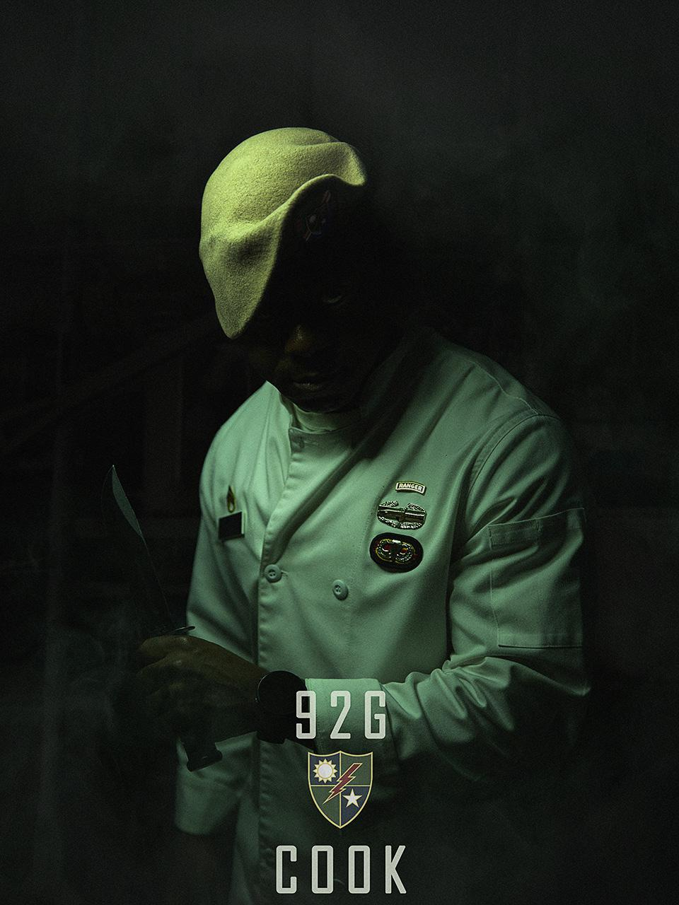
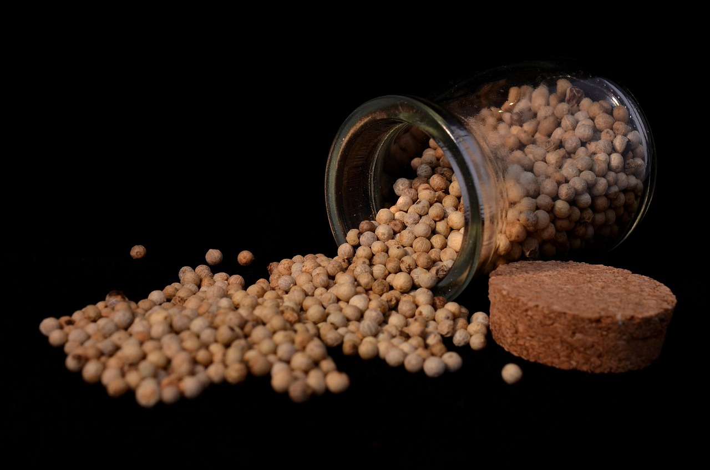

28 JUN 2026
Standing Orders
What I really want is to get more of you into cooking at home, because it is literally life changing.
Read More →1st Battalion • 75th Ranger Regiment
Rangers Lead the Way

What I really want is to get more of you into cooking at home, because it is literally life changing.
Read More →
Ten ingredients worth adding to your pantry. Most people have never cooked with any of them. You should.
Read More →